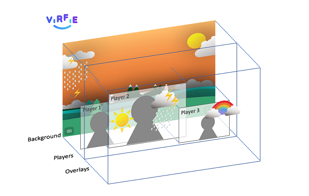

Virfie
Enhancing remote togetherness with user-created scenarios for virtual group selfies.

Overview
What happens to our sense of togetherness when being together becomes a screen?
As remote interaction becomes part of everyday life, physical presence is increasingly translated into fragments — gestures, gaze, movement, and attention mediated through a screen. Virfie explores what is lost in this translation, and what new forms of presence might emerge from it.
Through participatory research, we worked with participants to identify what felt absent from remote encounters and imagine alternative ways of being together. These explorations informed a functional prototype that uses position, gesture, synchrony, and shared attention to construct a collective virtual space.
Rather than attempting to reproduce face-to-face interaction, Virfie asks how digital systems might create new forms of social presence and togetherness that could not exist in physical space.
Participatory Design
We conducted a participatory design process to surface how people wish digital systems would reconstruct bodily cues, shared narratives, and micro-interactions that support social bonding — treating these desires as insights into the tacit mechanics of social cognition under mediation.

From Research to Interaction Design
Through iterative open coding, the team distilled three core patterns that users consistently envisioned, and these patterns directly informed the design of Virfie.

Designing Virfie
These insights were translated into a shared virtual experience where participants could use their bodies, gestures, position, and attention to collectively construct and interact with virtual scenarios.

Building the Prototype
Virfie is a WebRTC-based web application that connects users in the same room through peer-to-peer video streaming, reducing server load.
It uses WebSockets for real-time scenario updates, and the client extracts body parts from each video stream in real time using TensorFlow.js BodyPix.

Scenario System
A typical scenario configuration of Virfie shows how component layers are drawn to the main canvas. Each scene contains a number of properties including title, audio, users, overlays, triggers, and background.

Publications
IntelliSys 2024
Im, H. et al. (2024). Virfie: Enhancing Remote Togetherness with User-Created Scenarios for Virtual Group Selfie.
View publication →CHI 2022 Extended Abstracts
Earlier work on Virfie was presented at CHI 2022 Extended Abstracts.
View publication →Team
Hyerin Im, Taewan Kim, Eunhee Jung, Bonhee Ku, Seungho Baek, Younkyung Lim, Tekjin Nam, Takyeon Lee